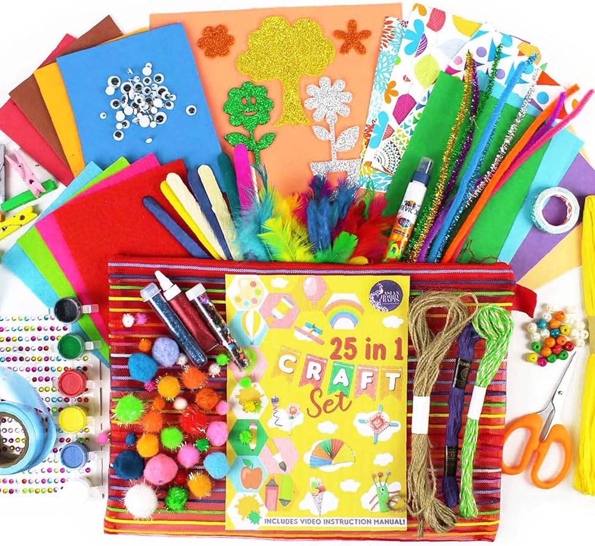

<html lang="en"></html>
<head>
    <meta charset="UTF-8">
    <meta name="viewport" content="width=device-width, initial-scale=1.0">
    <link href="https://cdn.jsdelivr.net/npm/bootstrap@5.3.3/dist/css/bootstrap.min.css" rel="stylesheet">
    <link href="https://cdn.jsdelivr.net/npm/bootstrap-icons@1.10.5/font/bootstrap-icons.css" rel="stylesheet">
    <link href="https://fonts.googleapis.com/css2?family=Libre+Franklin:wght@400;700&display=swap" rel="stylesheet">
    <link rel="stylesheet" href="about.css">
    <title>Projects</title>
</head>
<body>
    <nav class="navbar navbar-expand-sm fixed-top bg-body-transparent">
        <div class="container">
          <a class="navbar-brand" href="index.html"> c<i class="bi bi-strava"></i>ms </a>
          <button class="navbar-toggler" type="button" data-bs-toggle="collapse" data-bs-target="#collapsibleNavbar">
            <span class="navbar-toggler-icon"></span>
          </button>
          <div class="collapse navbar-collapse justify-content-end" id="collapsibleNavbar">
            <ul class="navbar-nav ms-auto mb-2 mb-lg-0 ">
              <li class="nav-item ms-4">
                <a class="nav-link" href="index.html">HOME</a>
              </li>
              <li class="nav-item ms-4">
                <a class="nav-link" href="projects.html">PROJECTS</a>
              </li>
              <li class="nav-item ms-4">
                <a class="nav-link" href="about.html">ABOUT</a>
              </li>
            </ul>
          </div>
        </div>
      </nav>

      <br><br><br>

      <div class="container2 col-12 col-md-12 col-lg-6 justify-content-center mx-auto">
        <h1 class="mb-4 text-center">About Me</h1>
        <p>
          <h4>Hello! I am Mary Myd</h4>
          A passionate 20-year-old aspiring web developer currently studying BSIT at Cordova Public College.
           With a solid foundation in both front-end and back-end development, I create dynamic and responsive web applications 
           that deliver seamless user experiences across all devices. My journey into programming started from a curiosity 
           about how websites work and has evolved into a dedicated career path. Inspired by my cousin, I chose this degree
            to deepen my understanding of technology. In my spare time, I enjoy reading, watching K-pop, and exploring various 
            forms of art. I also contribute to open-source projects and strive to expand my knowledge of new frameworks.
            My life motto is, "Everything happens for a reason; even when challenges arise, I will not give up." 
             Ultimately, I aspire to become a web designer.
        </p>

        <h2 class="mt-5 text-center pb-2">Favorites</h2>
        <div class="row">
            <div class="col-md-4">
                
            </div>
            <div class="col-md-4">
                
            </div>
            <div class="col-md-4">
                
            </div>
        </div>

        </div>

        <div class="design">
          <div class="position-relative d-flex">
            <span class="circle1"></span>
            <span class="circle2"></span>
            <span class="circle3"></span>
            <span class="circle4"></span>
          </div>
        </div>
  
    
        <script src="https://cdn.jsdelivr.net/npm/bootstrap@5.3.3/dist/js/bootstrap.bundle.min.js"></script>
        <script>
          const navbar = document.querySelector('.navbar');
      
          window.addEventListener('scroll', () => {
              if (window.scrollY > 50) { 
                  navbar.classList.add('scrolled');
              } else {
                  navbar.classList.remove('scrolled');
              }
          });
      
          const navbarToggler = document.querySelector('.navbar-toggler');
          navbarToggler.addEventListener('click', () => {
              navbar.classList.toggle('active');
          });
      </script>
    
</body>
</html>